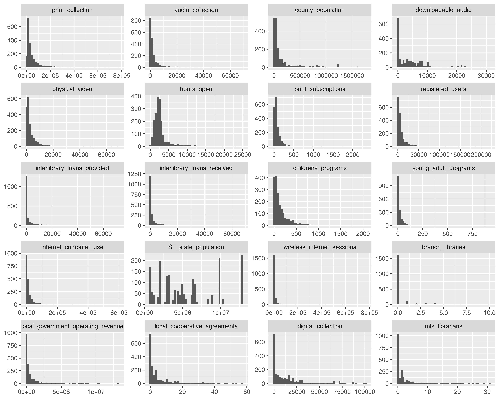

5 Analyse de données
5.1 L’analyse en composantes principales
L’analyse en composantes principales (ACP) est une méthode factorielle de réduction de dimension des données quantitatives complexes. L’ACP se base sur la matrice des variances-covariances. Elle cherche à résumer la dispersion des données. Le jeu de données sur lequel ce projet est réalisé est composé à majorité des données quantitatives, comme nous venons de voir dans les statistiques descriptives et les corrélations. Donc le choix d’une ACP pour analyser les données est justifié. L’analyse en composante principale que nous effectuons est centrée et réduite. Le but de centrer et réduire les données est de donner le même poids à chaque variable présente dans le jeu de données.
Le jeu de données initial contient 9225 observations, mais pour des raisons d’efficience (notamment pour la classification ascendante hiérarchique) nous n’allons utiliser qu’un échantillon tiré aléatoirement de 3000 individus du jeu de données. Ainsi nous travaillons sur un jeu de données de 3000 individus et 22 variables.
Nous allons réaliser une première ACP sur le jeu de données, en prenant toutes les colonnes numériques comme des colonnes actives (colonnes qui entrent dans le calcul) et les colonnes catégoriques structure administratives, les relations avec les autres bibliothèques, le code de la région et le statut juridique des bibliothèques. Voici les résultats de cette première ACP :
Ce graphique présente le pourcentage des variances expliquées par les axes factoriels. Le premier axe explique à lui seul 50% des variances, autrement dit, si on ne retient que cet axe on peut expliquer 50% des différences qui existent entre les bibliothèques. Or nous observons que le deuxième axe n’explique que 10%, on peut se douter qu’il y a un effet de taille dans l’analyse en composante principale.
Regardons le cercle des corrélations de l’ACP. Ce cercle montre la force de l’association des variables à deux axes factoriels (ici les axes 1 et 2).
On observe que toutes les variables sont positivement corrélées à l’axe 1 et très peu sont négativement corrélées à l’axe 2. Il s’agit d’un effet de taille.
5.2 Observation d’un effet de taille
On observe un effet de taille dans une ACP sur les variables lorsque tous les points sont regroupés du même côté d’un point factoriel. La première analyse que nous venons de faire montre clairement un effet de taille car tous les points sont positivement corrélés à l’axe 1 du plan factoriel.
Il existe plusieurs façons de corriger un effet de taille. La méthode la plus utilisée pour corriger l’effet de taille est de transformer les variables quantitatives en valeurs catégoriques et utiliser une autre méthode d’analyse factorielle, en l’occurence l’analyse des correspondances multiples (ACM).
Nous allons commencer dans un premier temps, à nous inspirer des statistiques descriptives des variables quantitatives et de la distribution des colonnes pour transformer les données numériques en données qualitatives.
5.3 Correction de l’effet de taille
Il convient dans un premier d’observer la distribution de chaque variable pour se faire une idée du nombre de modalités qu’on peut créer pour chaque variable.
Au regard de ce graphique nous observons une polarisation extrême de la distribution de colonnes numériques. Notre but dans la correction de l’effet de taille est de transformer les colonnes numériques en des catégories, autrement dit, nous cherchons à discrétiser ces colonnes. Or en ACM la part de l’inertie totale due à une modalité est d’autant plus grande que la modalité est rare, autrement dit les modalités peu fréquentes ont plus de poids que les modalités fréquentes, donc il est important que nous nous assurions que les intervalles que nous allons créer aient des fréquences à peu près équivalentes. Cela implique que d’enlever les bibliothèques qui prennent des valeurs extrêmes afin de ne pas biaiser les indicateurs de moments (quartiles) sur lesquels nous nous basons pour diviser les colonnes numériques et que ces bibliothèques constituent à elles seules des catégories du fait des valeurs qu’elles prennent.
Pour enlever les bibliothèques ayant les valeurs extrêmes, nous allons utiliser la méthode de 3 sigmas, bien que les colonnes ne soient pas distribuées selon une loi normale. Cette méthode permet d’enlever les observations qui ont des valeurs supérieures à 3 fois l’écart-type de la colonne.
Après avoir appliqué la méthode des 3 sigmas, voilà la nouvelle distribution des colonnes.

Le fait d’enlever les observations extrêmes a permis de réduire l’amplitude des colonnes, toutefois la distribution n’est pas normale.
Certaines colonnes numériques peuvent être facilement converties en colonnes catégoriques binaires. La variable branch_libraries qui représente le nombre de branches qu’une bibliothèque possède peut être transformée pour prendre la valeur 1 si elle possède des branches et 0 sinon.
Nous ferons ainsi pour les colonnes similaires.
Nous transformons les variables interlibrary_loans_provided et interlibrary_loans_received en une seule variable qui indique si oui ou non la bibliothèque prête plus qu’elle n’en emprunte.
Et pour les autres variables, nous allons les discrétiser selon leurs indicateurs de moments, principalement la médiane et les autres quartiles.